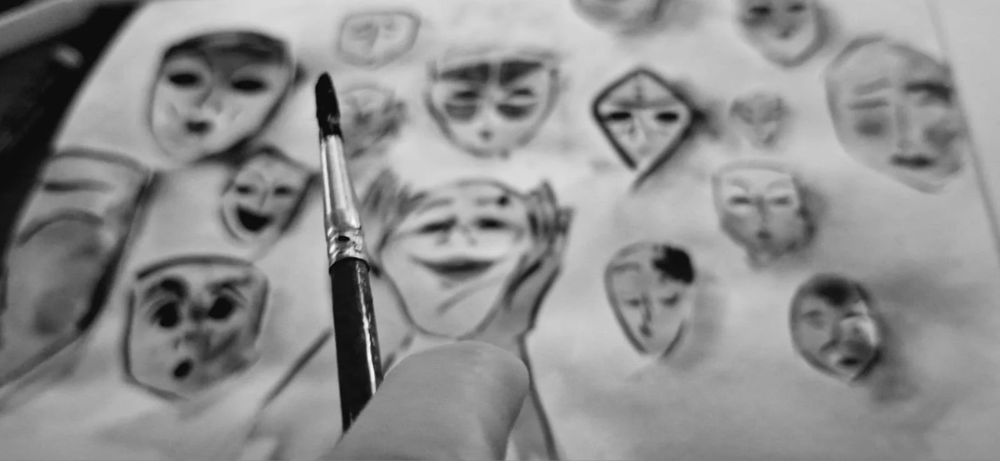
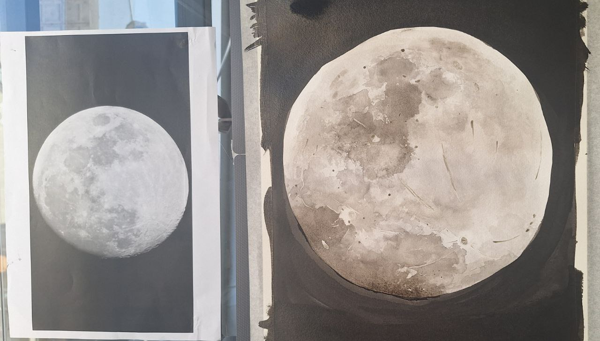
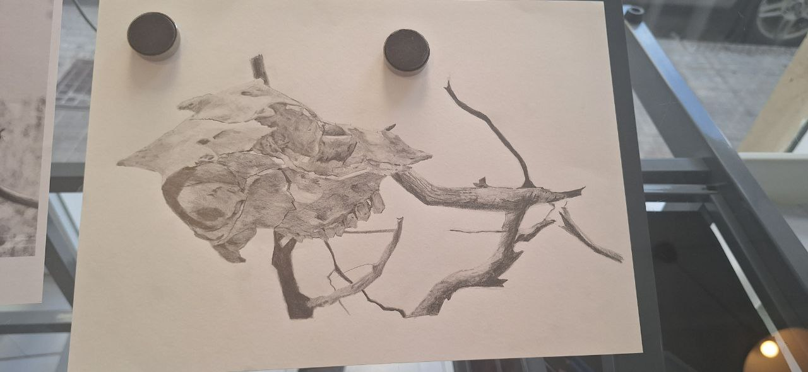

El mapa de un alma
con muchos caminos
Psicóloga para la prevención y promoción de la salud, con herramientas como la terapia Gestalt y el arte.
Ciencia que mira
con ternura
Estoy cursando el Máster en Psicología General Sanitaria con foco en el colectivo de personas mayores y hábitos para el envejecimiento activo (pro-aging).
Mi trabajo nace de una convicción: aprender a envejecer es una de las tareas más importantes de la vida, y comienza mucho antes de llegar a mayor. El autoconocimiento es la herramienta para habitar el envejecimiento con plenitud.
Somos nosotros mismos quienes nos acompañaremos en todas las etapas de la vida. Por eso la psicoterapia, combinada con la creatividad, no es solo un espacio para resolver problemas: es un camino para madurar y construir el propio recorrido vital con más conciencia y libertad.
«El cerebro humano evolucionó para la cooperación,
el cuidado y el aprendizaje compartido.»
Palma de Mallorca,
entre el mar y la raíz
Vivo en Palma de Mallorca: trabajo con personas mayores, y desde aquí ofrezco también sesiones online.
Atender en español, catalán, inglés y alemán me permite acompañar a personas de culturas y trayectorias muy distintas, con una mirada intercultural.
Creo que los mejores terapeutas son quienes también han aprendido a perderse —y a encontrarse— en territorios desconocidos.
La curiosidad como método
Alicia no cayó por el agujero por accidente. Cayó porque algo la llamó desde dentro. Esa es, para mí, la metáfora perfecta del trabajo psicológico: no se trata de corregir errores, sino de seguir la curiosidad hasta sus últimas consecuencias.
Mi enfoque es integrador. Combino herramientas de la psicología clínica con sensibilidad hacia el cuerpo, la creatividad y lo simbólico. Porque el ser humano no cabe en una sola disciplina.
Trabajo con la convicción de que conocerse a una misma es el mayor acto de valentía —y también el más transformador.



Más allá de la consulta
La psicología es mi hogar. Pero tengo otros mundos que también me hablan —y que me enseñan a ser mejor terapeuta.
✍️ Escritora y editora
Autora biográfica, correctora y prologuista. La escritura es el primer espacio donde aprendí a escuchar las historias de otros.
Ver mis obras →🌿 Masajista holística
Sesiones Almasaje que combinan masaje californiano, reflexología y arteterapia. El cuerpo sabe cosas que la mente tarda años en procesar.
Sobre Almasaje →🃏 Creadora de oráculos
Luz o Cruz: un sistema de cartas para la exploración interior, inspirado en la sabiduría de mi tía-abuela monja que vivió 103 años.
Conocer el oráculo →Si algo de todo esto resuena contigo,
me alegra que hayas llegado hasta aquí.
No importa desde qué puerta entres —la psicología, el cuerpo, las palabras o las cartas—. Todas llevan al mismo lugar.
Escribirme →